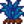

Bay Qi'nin Ceviz Odası
| Bay Qi'nin Ceviz Odası | |
 | |
 | |
| Açık Saatler: | Her Zaman |
| Adres: | Zencefil Adası |
| Oturanlar: | |
Ceviz Odası, Zencefil Adası'nın Batı tarafında bulunur. Oyuncu, 100 altın ceviz topladıktan sonra erişebilir. İçeride bir Mükemmellik Takipçisi, bir Özel İstek Tahtası ve Qi Taşı karşılığında eşya alınabilen bir Otomat Makinesi bulunur.
Qi Taşları, odanın kilidi açılmadan önce kazanılamaz, çünkü zaten onları kazanabilmenin 3 yolu da (Özel İstekler Tahtası, Mücadele Sunağı ve Altın Ceviz takası) bu odaya girebilmek için gereklidir.
Mükemmellik Takipçisi
Mükemmellik takipçisi oyunun ne kadarının tamamlandığını oyuncuya gösteren bir istatistik panosudur.
%100 Mükemmeliğe ulaşmak; Zirve, Gerçek Mükemmellik Heykeli, Altın Yumurta (ve Altın Tavuk), ??? (şapka), rastgele bir Altın Cadı olayı ve yeni kuş yaratıklarının kilidini açar.
| İsim | Gereksinim | Toplam Gereken | Verdiği Yüzde |
|---|---|---|---|
| Üretilen & Gönderilen Ürün | Koleksiyonlar menüsünde Gönderilen Nesneler (Tarım & Toplama) sekmesindeki her ögeyi gönder. | 154 | %15 |
| Işınlanma Totemi | Çiftlik'e Toprak Dikilitaşı, Su Dikilitaşı, Çöl Dikilitaşı ve Ada Dikilitaşı yerleştir. | 4 | %4 |
| Çiftlikteki Altın Saat | Çiftlik'e Altın Saat yerleştir. | 1 | %10 |
| Canavar Kesen Kahraman | Maceraperestler Loncası'ndaki bütün canavar yok etme görevlerini tamamla. | 12 | %10 |
| Yakın Arkadaş | Her Kasabalı ile maksimum kalbe ulaşın. Buna Kent de dahildir, dolayısıyla bunu 1. yılda tamamlamak mümkün değildir. Not: Bekâr köylüler için "maksimum kalp" 8'dir ve bekâr olmayan köylüler için 10'dur. Oyuncunun çocuğu varsa arkadaşlık durumu skoru etkilemez. | 34 | %11 |
| Çiftçi Seviyesi | Her yetenekte seviye 10'a ulaş. | 25 | %5 |
| Bulunan Yıldızkaydı | Bütün Yıldızkaydılarını bul. | 7 | %10 |
| Yapılan Yemek | Bütün yemekleri pişir. | 81 | %10 |
| Oluşturulmuş Nesne | Bütün nesneleri oluştur. Tek oyunculu modda Düğün Yüzüğü gerekmez. | 149 | %10 |
| Tutulan Balık | Koleksiyon menüsünde Balıklar sekmesindeki bütün balıkları yakala. | 72 | %10 |
| Bulunan Altın Ceviz | Zencefil Adası'ndaki bütün Altın Cevizleri bul. | 130 | %5 |
Özel Siparişler Panosu
- Ana makale: Görevler
Tahta, her pazartesi seçilebilir iki yeni görev ile yenilenir.
| Sipariş İsmi | Sipariş Açıklaması | Maksimum Süre | Gereksinimler | Ödüller | ||
|---|---|---|---|---|---|---|
| Qi Ekini | Dünyanın farklı yerlerine Qi tohumu sakladım. Onları bul, ek ve yetiştir. Sonrasında süren dolmadan 500 Qi meyvesi gönder. | 28 gün | Not: Gönderim Kutusu ile gönderilip satılmalıdır, Pierre'e satılanlar sayılmaz. |
|||
| Hadi Oyun Oynayalım | JunimoKart'ın sonsuz oyun modunda 50.000 puan yapamazsın bence. Görelim bakalım yapabilecek misin. | 7 gün | Junimo Kart'ın sonsuz oyun modunda 50.000 puana ulaş. | |||
| Dört Değerli Taş | Dört prizma parçası bul ve koleksiyon kutusuna koy. | 28 gün | Prizma parçaları görev aktifken toplanmalıdır |
|||
| Qi'nin Açlık Mücadelesi | Kafatası Mağarası'nda 100. seviyeye ulaşacaksın. Fakat, oradayken hiçbir şey yemeyecek ve içmeyeceksin. | 7 gün | Hiç yemek veya içecek ögesi tüketmeden Kafatası Mağarası'nın 100. katına ulaş. Bu, Merdivenler ile de başarılabilir. Bu görev aktifken içinde oyuncuya 10 Sağlık veren kalpler barındıran Büyük Balçıkçalar ortaya çıkabilir. Görev aktifken yemek tüketmeden sağlık yenilemenin bir diğer yolu da her bir canavar öldürüldüğünde 2 Sağlık sağlayan bir veya daha fazla Vampir Yüzüğü kuşanmaktır. Mağaraya girmeden önce yemek veya içecek (Qi Çeşnisi ile hazırlananlar daha iyidir) tüketilebilir. | |||
| Qi'nin Yemeği | 100.000g değerinde taze pişirilmiş yemek gönder.. | 14 gün | Bu siparişi tamamlamanın bir kolay yolu şöyledir:
|
|||
| Qi'nin Nezaketi | Bir hafta içerisinde 50 sevilen hediye ver. | 7 gün | Bir hafta içerisinde 50 adet sevilen hediye ver. Her gün her kasabalıya bir hediye verilebilir (kasabalı başına her hafta iki hediye) ve hediye verilebilen 34 kasabalı bulunur. Bu yüzden bu sipariş ilk gün bütün 34 kasabalıya hediye vererek ve sonraki günde 16 kasabalıya hediye vererek toplamda 50 hediye vermiş olarak en az iki günde bitirilebilir.
|
|||
| Geniş Aile | Efsanevi balıkların ailesi vadiye döndü. Üç gün içerisinde Bayan Fenerbalığı'nı, Buzulbalığın Oğlu'nu, Kızılbalığın Oğlu'nu, Radyoaktif Sazanbalığı'nı ve II. Efsane'yi yakala. | 3 gün | Bayan Fenerbalığı, Buzulbalığın Oğlu, Kızılbalığın Oğlu, Radyoaktif Sazanbalığı ve II. Efsane'yi yakala. Diğer efsanevi balıkların yakalanabildiği noktalarda yakalanabilirler ancak orijinal efsanevi balıkların aksine oltaya takıldıklarında özel bir efsanevi balık ikonuna sahip olmazlar. Efsanenin aksine II. Efsane'nin tutulabilmesi için yağmur yağması gerekmez
Orijinal efsanevi balıklar için olan seviye gereksinimleri bu balıklar için de gereklidir. Yani Efsanede olduğu gibi II. Efsane'yi yakalamak için seviye gereksinimi olduğundan seviye 10 balıkçılığa ulaşmadan veya geçici Etkiler olmadan bu siparişi tamamlamak imkansızdır. Şu anda Gece Pazarı sırasında (Kış 15-17) Kızıl Balığın Oğlu'nu yakalamanın imkansız olduğu bir hata var. Bu nedenle, oyuncu Geniş Aile Görevini Kışın 3. haftasında alırsa, görevi 15. Kışta kabul etmemelidir, aksi takdirde tamamlamak imkansız olacaktır. |
|||
| Derinlerdeki Tehlike | Madendeki asansör sıfırlandı ve derinlerde yeni tehlikeler belirdi. Bir haftada madenin dibine ulaş. | 7 gün | Dağdaki Madenlerin sonuna ulaş. Bu, Merdivenler ile başarılabilir. Not edilmelidir ki bu sipariş aynı zamanda Maceraperestler Loncası'nda kilidi açılan ekipmanları da sıfırlar. | |||
| Kafatası Mağarası İstilası | Güçlü canavarlar Kafatası Mağarası'nı istila etti. 100. seviyeye tek parça halinde ulaş. | 7 gün | Kafatası Mağarası'nın 100. katına ulaş. Bu, Merdivenler ile başarılabilir. | |||
| Qi'nin Prizma Çiftliği | Kırmızı, turuncu, sarı, yeşil, mavi ve mor nesnelerden 100'er tane bul. Sonra da onları koleksiyon kutuma bırak. | 14 gün | Qi'nin koleksiyon kutusuna 100 kırmızı, 100 turuncu, 100 sarı, 100 yeşil, 100 mavi ve 100 mor öge bırak. Not edilmelidir ki bu siparişin öge seçimi kısıtlıdır. Bu siparişte sayılan ögeler için boya kutuları sayfasındaki kalın yazılmış ögeleri inceleyin. Ögeler, görevden önce de toplanılmış olabilir. Qi'ye teslim edildikten sonra geri alınamaz.
|
Stok
Not edilmelidir ki Pierre'in Kayıp Stok Listesi, Kasaba Anahtarı ve tarifler, sadece bir kere satın alınabilir.
| Görsel | İsim | Açıklama | Fiyat |
|---|---|---|---|
| Junimo Sandığı | Orman büyüsünün gücünü kullanan her bir Junimo sandığı aynı zulaya bağlıdır. İlk defa satın alındığında, |
||
| At Flütü | Bu flütü çaldığında atın yanına gelir. Sadece dışarıda işe yarar. | ||
| Pierre'in Kayıp Stok Listesi | Bu liste Pierre'in ilgisini cezbedebilir. | ||
| Huni | İçine konulan nesneleri doğrudan önündeki makineye aktarır. | ||
| Gübreleyici (4) | Fıskiyeye yerleştirilip gübreyle doldurulduğunda çevredeki ekinleri otomatik olarak gübreler. | ||
| Basınç Memesi (4) | Fıskiyeye yerleştirildiğinde sulama menzilini arttırır. | ||
| Ayırıcı | Oluşturulan nesneleri parçalarına ayırır ve değerli materyalleri geri kazandırır. | ||
| Kasaba Anahtarı | Kasabadaki tüm yapılara istediğin zaman girebilmeni sağlar. | ||
| Galaksi Ruhu | 3 tanesi bir araya getirilip bir galaksi silahına döndürüldüğünde asıl haline ulaşır. | ||
| Mantar Ağacı Tohumu | Mantar ağacı yetiştirmek için çiftliğe ekilir. | ||
| Büyülü Yem (20) | Hangi mevsimde, saatte ya da hava durumunda olta atıldığına bakılmaksızın her balığın tutulmasını sağlar. | ||
| Qi Çeşnisi (10) | Sıradan yemekleri olağanüstü hale getirir. Yemek yaparken otomatik olarak eklenir. | ||
| Bay Qi'nin Şapkası | Bay Qi'nin ikonik şapkasının çakması. | ||
| Su Sığınağı | Evin içine yerleştirilebilir. | ||
| Büyük Akıtaç Tarifi | Büyük Akıtaç yapma tarifi. | ||
| Aşırı Hızlı-Ek Tarifi | Aşırı Hızlı-Ek yapma tarifi. | ||
| Üstün Gübre Tarifi | Üstün Gübre yapma tarifi. | ||
| Huni Tarifi | Huni yapma tarifi. | ||
| Büyülü Yem Tarifi | Büyülü Yem yapma tarifi. | ||
| Küçük Gönderi Kutusu | Geceleri satılmasını istediğin malları kutuya koy. | ||
| Egzotik Çift Kişilik Yatak | Evin içine yerleştirilebilir. | ||
 |
Mavi Çimen Yetiştirici Tarifi | Mavi Çimen Yetiştirici yapma tarifi. | |
| Kırmızı Havaifişek | Eski bir kutlama ve şenlik geleneği. Dikkatli olunması gerekir. | ||
| Mor Havaifişek | Eski bir kutlama ve şenlik geleneği. Dikkatli olunması gerekir. | ||
| Yeşil Havaifişek | Eski bir kutlama ve şenlik geleneği. Dikkatli olunması gerekir. | ||
| Qi Taşı (2) | Bay Qi onuruna üretilen özel bir taş. Zencefil Adası tamamen geliştirildiğinde ve oyuncu ekstra altın cevize sahip olduktan osnra alınabilir olur |
||
| Altın Yumurta | Ender bulunan özel bir yumurta. Mükemmellik elde edildiğinde kullanılabilir hale gelir. |
Notlar
- Ceviz odasına girmek için gereken Altın Ceviz sayısı hesaplanırken ilk bulunan Ceviz sayılmaz. Yani aslında oyuncunun odayı açabilmek için 101 Altın Ceviz bulması gerekir.
Hatalar
- Bazı durumlarda Mükemmellik Takipçisi'ndeki Altın Ceviz sayısı yanlış bir ceviz sayısı gösterebilir. Bu, kayıt dosyasını düzenleyerek doğru hale getirilebilir. Eğer bunu yapamıyorsanız,
/recountnutskomudunu sohbet kısmına yazabilirsiniz. Bu, bulunan ceviz sayısını tekrar hesaplar ve kaydı düzeltir. Ancak kasıtlı olarak yapılmayan bir hata vardır ki, oyuncu, bulduğu Qi Taşı sayısı kadar bedava Altın Ceviz alabilir.
Geçmiş
- 1.5: Eklendi.
- 1.6: Market stoğuna Mavi Çimen Yetiştirici tarifi ve Havaifişek (Kırmızı, Mor ve Yeşil) eklendi.
- 1.6.4: Market stoğuna Küçük Gönderi Kutusu eklendi.
| Binalar | ||
|---|---|---|
| Tüccarlar | Ada Taciri • Balıkçı • Bay Qi'nin Ceviz Odası • Büyücü'nün Kulesi • Çöl Tüccarı • Demirci • Dondurma Standı • Gezgin Araba • Harvey'nin Sağlık Ocağı • JojaMart • Kumarhane • Maceraperestler Loncası • Marangoz Atölyesi • Marnie'nin Çiftliği • Pierre'in Bakkalı • Vaha • Yanardağdaki Cüce • Yıkık Ev • Yıldızkaydı Salonu | |
| Evler | Ada Çiftlik Evi • Ağaç Ev • Başkan'ın Köşkü • Çadır • Çiftlik Evi • Elliott'ın Barakası • Irmak Sokağı, No: 1 • Irmak Sokağı, No: 2 • Karavan • Leah'nın Barakası • Dağ Sokağı, No: 24 • Söğüt Sokağı, No: 1 • Söğüt Sokağı, No: 2 | |
| Çiftlik Yapıları | Çiftçilik | Ahır • At Ahırı • Balçıkça Kümesi • Balık Havuzu • Baraka • Kulübe • Değirmen • Kuyu • Kümes • Sera • Silo |
| Özel | Ada Dikilitaşı • Altın Saat • Çiftlik Dikilitaşı • Çöl Dikilitaşı • Junimo Barakası • Su Dikilitaşı • Toprak Dikilitaşı | |
| Diğer Binalar | Araştırma Çadırı • Cadı'nın Barakası • Halkevi • Hamam • Joja Deposu • Köpek Oyun Alanı • Müze • Sinema Salonu | |